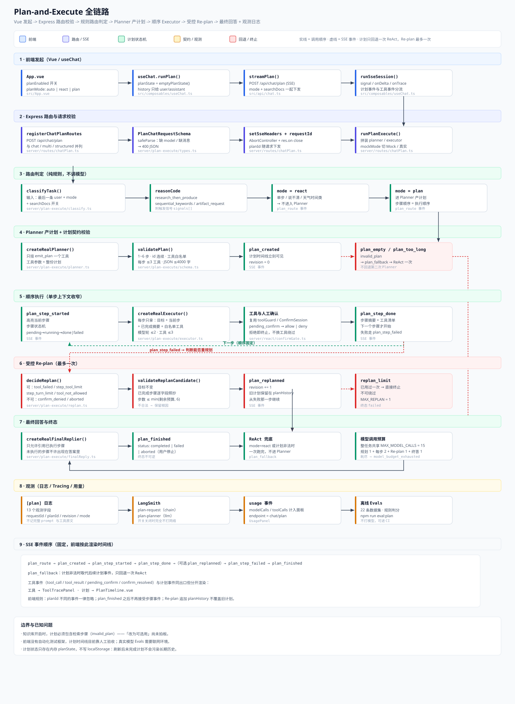
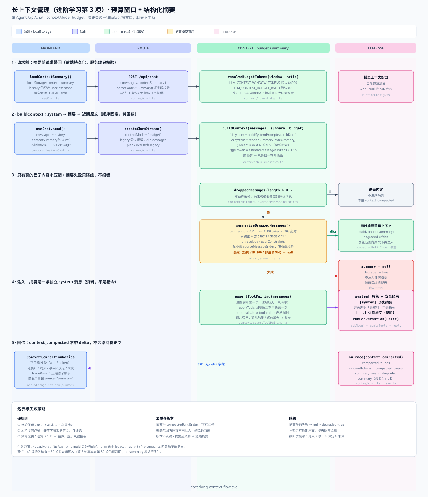
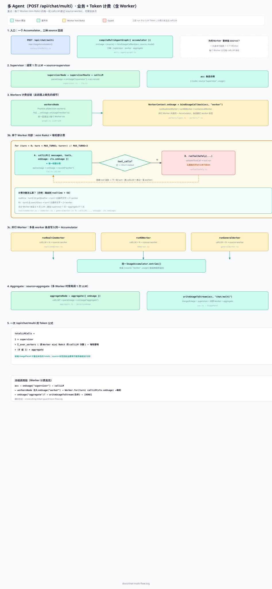
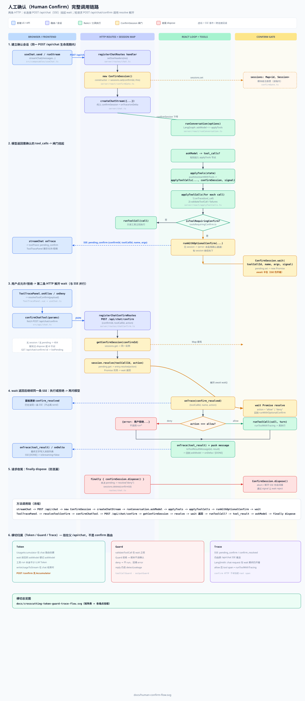
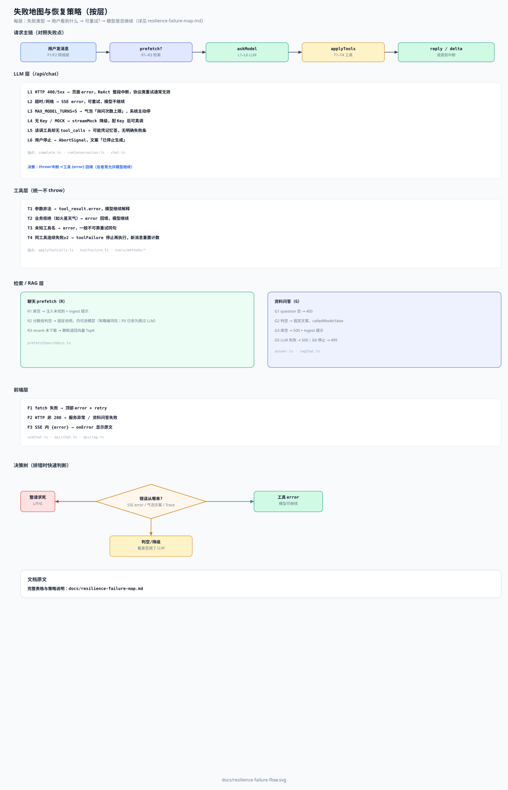

step1-chat · 流程 SVG 索引
泳道流程图（含方法名、调用链，以及 Token / Guard / Trace 横切）。浏览器直接打开本页即可浏览。
Markdown 索引：flows-index.md · 学习计划对照拓扑：project-topology.html
0 · 横切总览（Token · Guard · Trace）
源码 usage/ · guard/ · tracing/

0b · Streaming 结构化输出
文档 structured-output.md · 拓扑 §6c

0c · Plan-and-Execute
文档 plan-and-execute.md · 拓扑 §6d

0d · 长上下文管理
文档 long-context.md · 拓扑 §6e

1 · 单 Agent ReAct + 横切
文档 project-messages-flow.md §三

2 · 多 Agent + 横切
文档 project-messages-flow.md §四

3 · 资料问答 RAG + 横切缺口
文档 rag-input-output-guard-changelog.md · project-messages-flow.md §五

3b · 检索前问句增强（额外课）
计划 rag-query-intent-rewrite-learning-plan.md · 笔记 rag-query-enhance-notes.md · 拓扑 §6b

4 · 人工确认（单 Agent）
文档 human-confirm-changelog.md

4b · 人工确认（多 Agent）
文档 multi-agent-human-confirm-changelog.md

5 · messages 拼装总览
文档 project-messages-flow.md

6 · 失败地图
文档 resilience-failure-map.md

7 · 工具注册与发现
文档 dynamic-tool-discovery.md